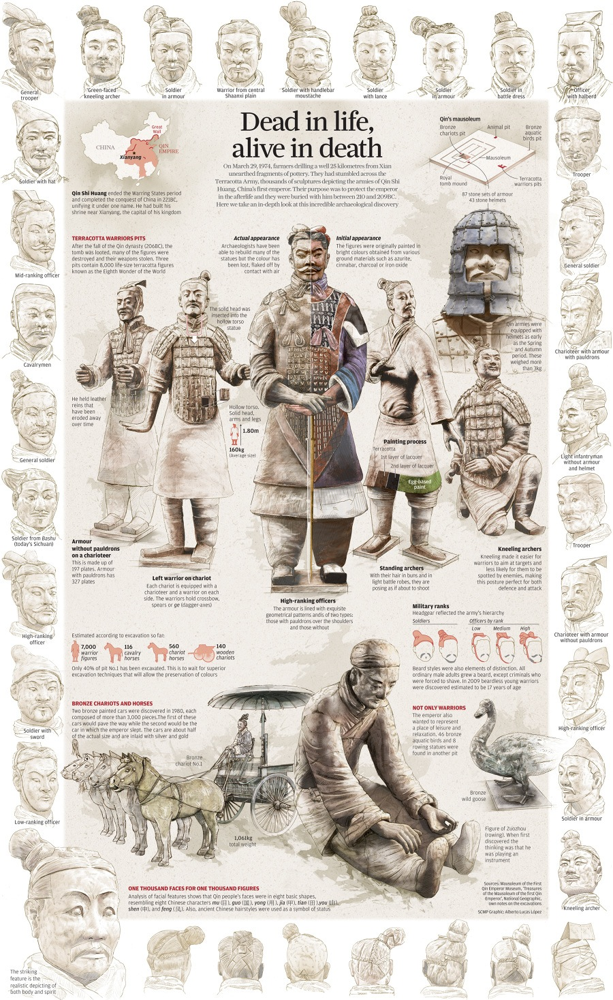

Cultural Perspective
Symbolisme
The Terracotta Warriors represent many important elements of ancient Chinese culture, such as military, unification, imperial power and religion. They are a symbol of the unification of China by Qin Shi Huang and reflect the hierarchical and centralized structure of ancient Chinese society.
Religion and Beliefs
Many other funerary objects and offerings have been found in the Terracotta Warriors tombs, and these reflect the religious and sacrificial beliefs of ancient China. These artifacts reveal the ancient Chinese people's beliefs in the afterlife and the gods.